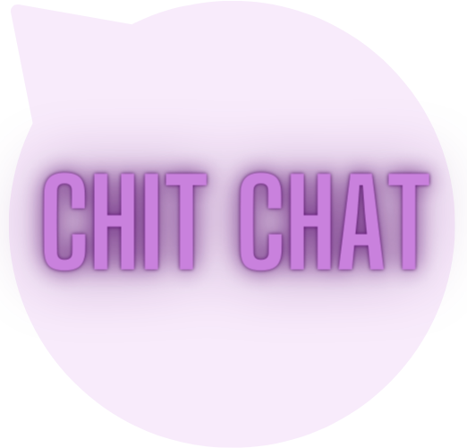
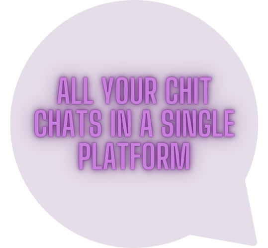
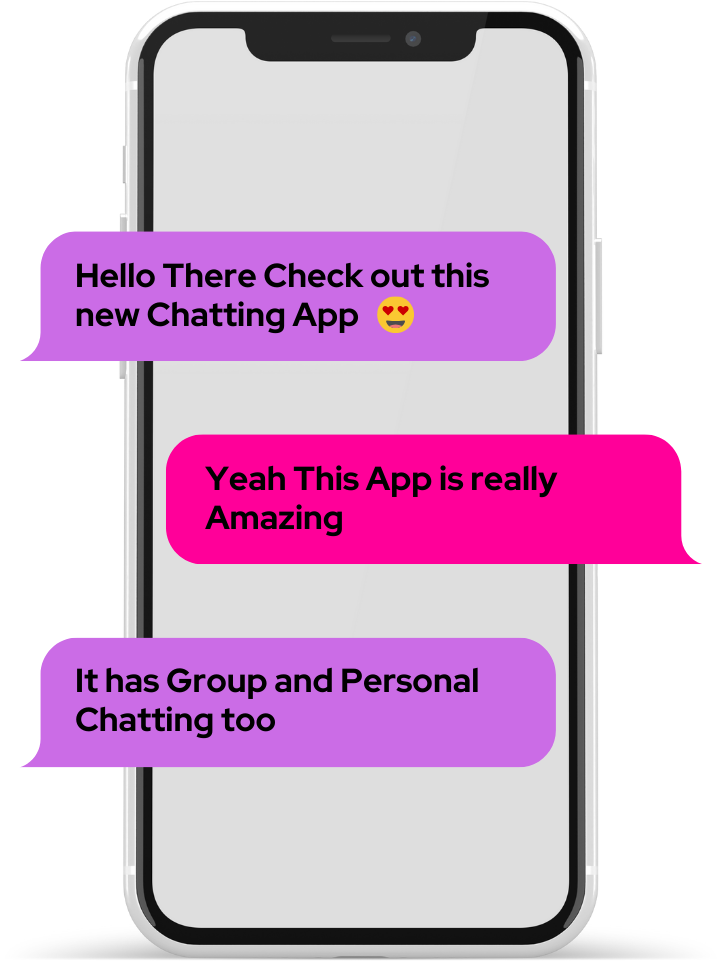

<div id="chatContainer" *ngIf="user">
  <app-sidebar [ngStyle]="hideMatIcon &&screenSize ? { 'display': 'none' } : {'display':'block'}"
    (conversationClicked)="onConversationSelected($event)"
  ></app-sidebar>
  <button   class="fab-button circular-button " (click)="openModal(userlist)" [ngStyle]="hideMatIcon ? { 'display': 'none' } : {'display':'block'}">
    <ion-icon style="font-size: 25px;" name="people-outline"></ion-icon>
  </button>
  <div id="chat" [ngStyle]="!hideMatIcon && screenSize ? { 'display': 'none' } : {'display':'block'}">
    <div id="chatPlaceholder" *ngIf="!conversation.members">
      <div style="display: flex; flex-direction: row; height: 100%; width:75%; position: absolute;left: 26.5%; ">

        

      </div>
     <div>
      
     </div>
    </div>

    <app-chat id="appChat" *ngIf="conversation.members" [conversation]="conversation"   (backClicked)="onChatBackClicked($event)" ></app-chat>
  </div>
</div>

<ng-template #userlist let-quest>
  <app-user-list (backClicked)="onChatBackClicked($event)" ></app-user-list>
</ng-template>